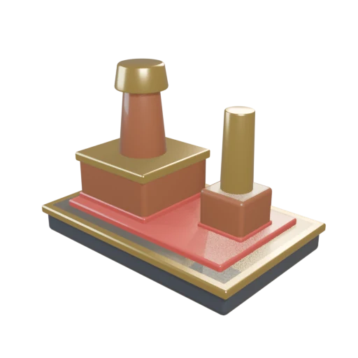

⚔️ Lv.1 見習選務特派員

聖物 0/6 清冊 0/6
清冊 0/6
👆 左右滑動欣賞手繪小鎮，或直接點下方「六大據點與寶箱」單手開戰！
歡迎來到儲互社奇幻小鎮！
 ⚔️ 勇者
⚔️ 勇者

聖物 0/6清冊 0/6
⚔️ 勇者

茲表揚 中華民國儲蓄互助社
選務勇者
成功巡歷儲互社奇幻小鎮六大據點、收集【六大移交清冊】與【六大法規聖物】，
以 115 年最新選罷法擊破抗不移交前任理事長、圓滿奪回社大圖記！